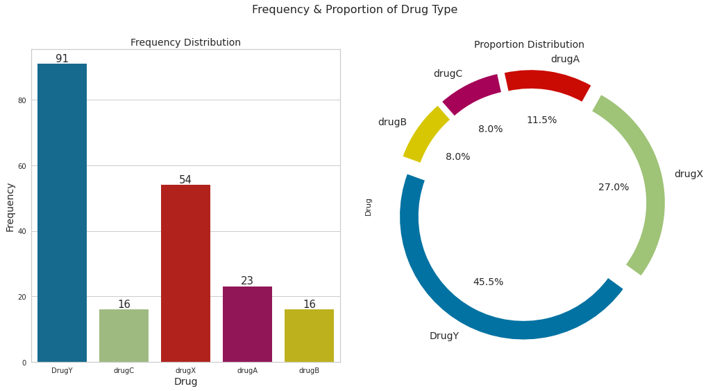

Introduction
The increasing complexity of the drug landscape has prompted concerns about the accurate classification of drugs, leading to potential risks for patients. This issue directly impacts patient safety, as the mismanagement of medications can result in adverse events. The lack of a unified drug classification system further complicates prescribing, dispensing, and monitoring drug therapies for healthcare professionals.
To address these challenges, it is crucial to develop a comprehensive drug classification system that is both accurate and standardized. This system should consider patient-specific factors such as age, gender, blood pressure levels, cholesterol levels, and the sodium-to-potassium ratio to ensure precision in prescribing and monitoring medications.
Drug Categories:
- Category 1: Most dangerous, strictly regulated, and requires physician supervision.
- Category 2: Moderate risk, prescription with restrictions.
- Category 3: Low risk, available over the counter.
- Category 4: Deemed safe, sold without restrictions.
- Category 5: Generally safe with some potential risks, sold without a prescription but with restrictions.
-

This visual aid facilitates a comparative analysis, revealing that Drug Y holds the largest share, comprising 45.5% of the dataset. Following this, Drug X accounts for 27%, while Drugs A, B, and C exhibit smaller proportions at11.5%, 8%, and 8%, respectively. This breakdown provides a concise overview of the dataset's drug composition, enabling a clear understanding of the prevalence of each drug and their relative contributions to the overall distribution.
The implementation of this new drug classification system aims to safeguard public health by protecting individuals from potentially dangerous drugs. By providing a structured framework, the system ensures that those in need of medication can access it safely and responsibly.
Feature Engineering
In practical scenarios, it's uncommon for all features to bear equal importance during model development. Understanding the impact of each input feature on the target becomes essential. This can be achieved through statistical tests like Pearson, ANOVA, Chi-Square, or by employing machine learning algorithms such as Random Forests.
To identify important features, we implemented the SelectFromModel function available in the Sklearn library. This function utilizes a base estimator to recognize significant features based on a specified threshold, a metric used to calculate feature importance.

The features deemed important for our model are: BP_HIGH, Age, Sodium to Potassium Ratio. This selection provides valuable insights into the specific features that significantly contribute to the model's decision-making process. By focusing on these key features, we aim to enhance both the predictive performance and interpretability of the model.
Model Development and SMOTE Technique
The training report for the Naive Bayes model presents a mixed performance across different classes. Notably, class 3 exhibits a precision, recall, and F1-score of 0, indicating that the model struggled to correctly identify instances of this class. Class 0 achieved perfect precision but showed a lower recall, suggesting some instances were not accurately classified. On the other hand, class 4 displayed relatively good precision and recall.
The overall accuracy on the training set was 68%, with a weighted average F1-score of 0.64. In the testing report, there are improvements in performance metrics, particularly for class 3, though challenges persist with precision and recall for this class. The model achieved an accuracy of 80% on the testing set, with a weighted average F1-score of 0.77. The macro-average precision, recall, and F1-score for the testing set were 0.71, 0.76, and 0.72, respectively. Despite the improvement, the model's struggle with class 3 suggests a need for further analysis and potential adjustments to enhance its predictive capabilities, especially in dealing with imbalanced classes.
Upon implementing SMOTE and re-evaluating the model, the results on the training set remained largely unchanged. However, on the testing set, there was an overall improvement in precision, recall, and F1-score for all classes, including a notable enhancement for class 3. Despite this improvement, class 3 still exhibited suboptimal precision and recall, indicating persistent challenges in predicting this class accurately.
In summary, while SMOTE had a positive impact on the testing set's overall performance, challenges in predicting class 3 persisted. The imbalanced nature of the classes and the inherent complexity of certain classes may necessitate further analysis. Additional investigations into the characteristics of class 3, feature importance, and potential model adjustments might be crucial for enhancing the model's predictive capabilities, especially in scenarios with imbalanced datasets. Furthermore, considering alternative evaluation metrics and optimizing the threshold for class prediction could contribute to a more comprehensive understanding of the model's performance.